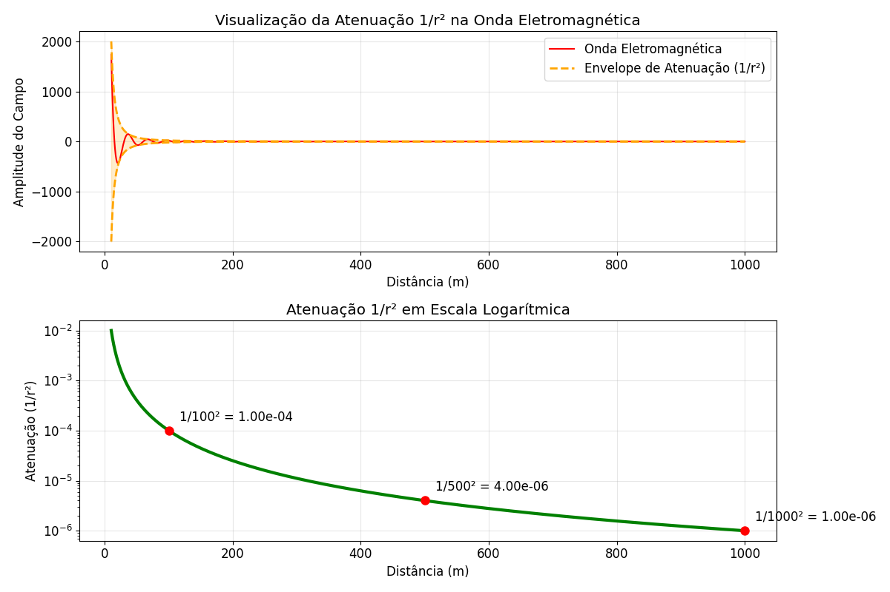
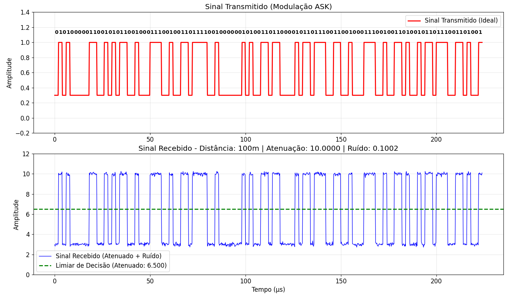
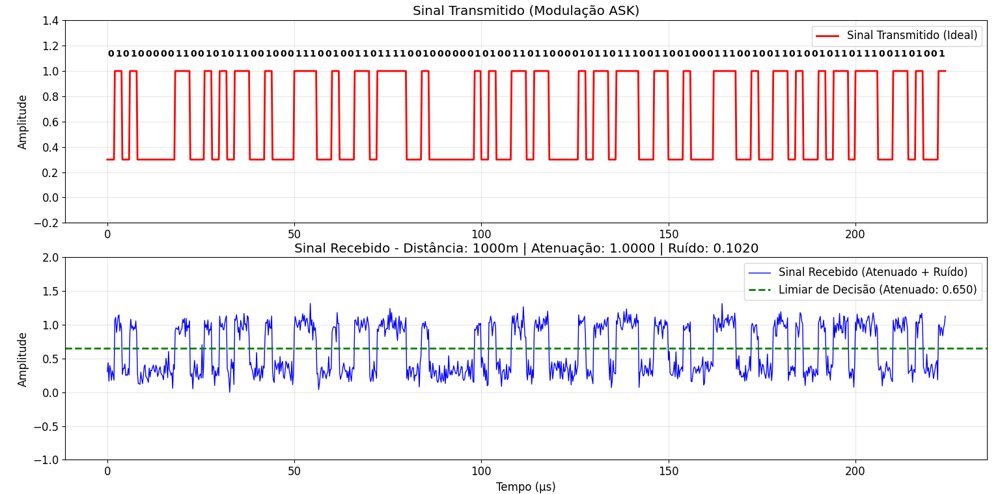
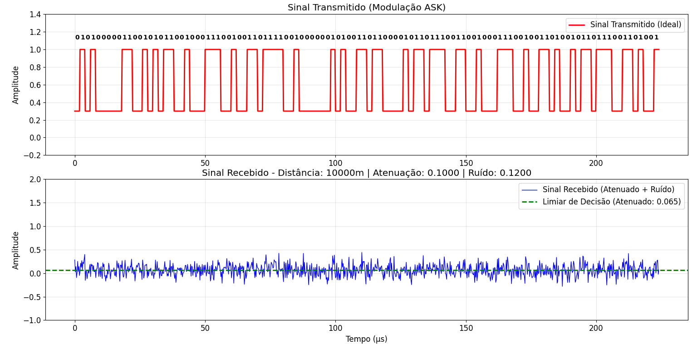
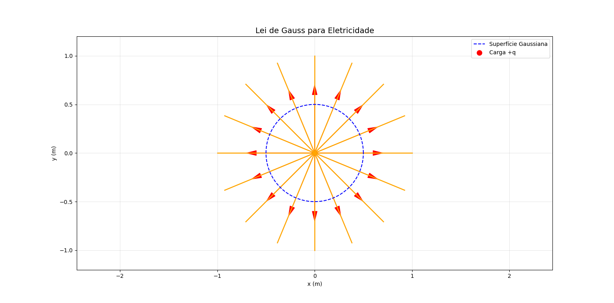
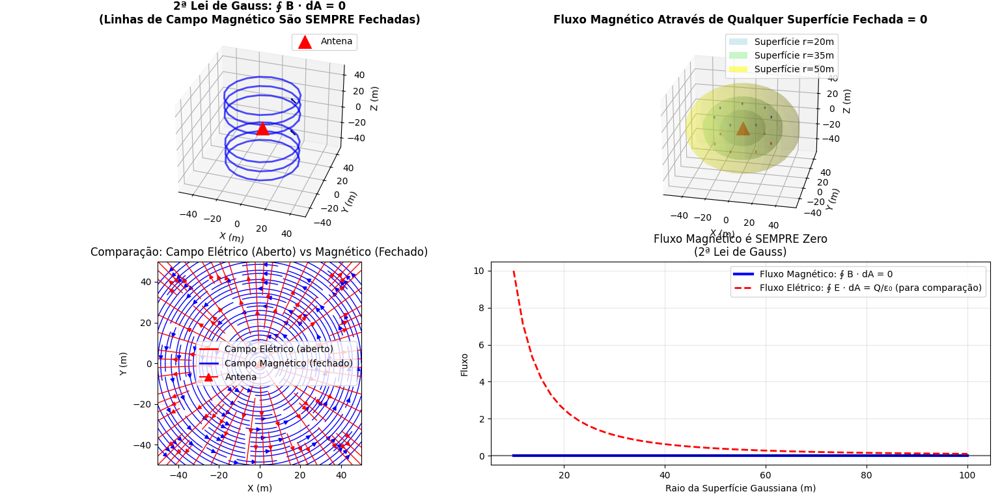

Eletromagnetismo e as Leis de Maxwell
Uma análise visual através de simulações
0. Aplicação Prática: Antenas
As antenas são dispositivos projetados para transmitir ou receber ondas eletromagnéticas, baseando-se diretamente nos princípios de campos elétricos e magnéticos variáveis.

Esta é uma simulação de uma antena parabólica irradiando ondas. O sinal é gerado no "feed horn" (ponto focal) e refletido pelo prato, que o concentra em um feixe estreito direcionado à antena receptora. A transmissão se baseia em correntes elétricas oscilantes que geram campos elétricos e magnéticos variáveis, os quais se propagam como ondas.
Nesta imagem, vemos a atenuação, um fenômeno fundamental. À medida que a onda se propaga pelo espaço, sua energia se espalha por uma área cada vez maior. Com isso, a intensidade do sinal (potência por área) diminui com o quadrado da distância (raio). É por isso que sinais de torres distantes chegam tão fracos.
O ruído em uma transmissão entre antenas não vem diretamente das Leis de Maxwell, mas pode ser explicado por elas. As equações de Maxwell descrevem como os campos elétricos e magnéticos se propagam — de forma determinística, sem ruído. Na prática, o ruído aparece por causa de flutuações térmicas, interferências externas e imperfeições dos circuitos, que atuam como fontes aleatórias dentro das equações. Assim, o ruído não é criado pelas leis de Maxwell, mas se propaga através delas, do mesmo modo que o sinal útil. Uma forma de representar isso na Lei de Ampère-Maxwell é separando as fontes de corrente:
Onde J_determinística é o sinal que queremos enviar, e J_ruído representa todas as fontes de corrente aleatórias e indesejadas (ruído térmico, interferência, etc.).
Aqui, vemos o sinal recebido a uma distância de 100m. Ele é claro e facilmente distinguível do ruído de fundo (as flutuações aleatórias menores). O ruído é uma interferência eletromagnética inevitável, gerada por fontes naturais e artificiais. A qualidade da recepção depende da Relação Sinal-Ruído (SNR): o sinal deve ser muito mais forte que o ruído para ser decodificado.
Quando a distância aumenta significativamente, para 1km, o sinal fica muito mais fraco devido à atenuação. O nível de ruído, no entanto, permanece o mesmo. Como resultado, o sinal (pico) mal se destaca do ruído. A Relação Sinal-Ruído (SNR) fica muito baixa, tornando a comunicação difícil ou impossível.
No próximo caso, a antena receptora está a 10km da transmissora e o sinal se torna impossível de ser lido, já que a amplitude foi muito atenuada e os ruídos se sobressaem.
1. Lei de Gauss para Eletricidade
A primeira lei de Maxwell descreve como cargas elétricas criam campos elétricos. O fluxo do campo elétrico através de uma superfície fechada é proporcional à carga elétrica total contida nessa superfície.
Nesta simulação, vemos as linhas de campo elétrico (setas) emanando de uma carga positiva (fonte). A Lei de Gauss nos diz que o número total de linhas que atravessam uma superfície imaginária (como a esfera pontilhada) é diretamente proporcional à quantidade de carga (+q) dentro dela. Se a carga fosse negativa, as linhas apontariam para dentro.
Esta fórmula diz que o fluxo do campo elétrico (𝐄) saindo de um volume é proporcional à densidade de carga elétrica ρ dentro dele. Em outras palavras, cargas positivas “emanam” linhas de campo e cargas negativas as “absorvem”.
Esse mesmo princípio é aplicado nas antenas transmissoras. Quando a corrente alternada oscila dentro do condutor, ela faz as cargas se acumularem e se redistribuírem periodicamente nas extremidades da antena. Cada variação de carga cria e retira linhas de campo elétrico, como prevê a Lei de Gauss. É essa alternância contínua de campos elétricos e magnéticos que dá origem às ondas eletromagnéticas que se propagam pelo espaço.
2. Lei de Gauss para Magnetismo
Esta lei afirma que não existem "monopolos magnéticos" (cargas magnéticas isoladas, como um "norte" sem um "sul"). O fluxo magnético total através de qualquer superfície fechada é sempre zero.
A simulação ilustra um ímã permanente (ou uma antena, que também gera o campo). Observe como as linhas de campo magnético sempre formam loops fechados: elas saem do polo norte e entram no polo sul, continuando *por dentro* do material. Qualquer superfície fechada que você desenhar terá o mesmo número de linhas "entrando" e "saindo", resultando em um fluxo líquido zero.
O campo magnético (𝐁) nunca tem começo nem fim — suas linhas são sempre fechadas. Isso significa que não existem monopolos magnéticos isolados.
3. Lei de Faraday da Indução
A terceira lei é fundamental para a geração de eletricidade. Ela descreve como um campo magnético variável no tempo (ou um movimento através dele) pode "induzir" uma corrente elétrica em um circuito.

Observe que a lâmpada neon acende *sem* estar fisicamente conectada à antena. A antena transmissora cria uma onda eletromagnética (um campo magnético e elétrico variável). Quando essa onda atravessa o circuito da lâmpada, o campo magnético variável induz uma voltagem (uma "força eletromotriz") no fio, forçando os elétrons a se moverem e acendendo a lâmpada. É o princípio da indução!
Um campo magnético (𝐁) que varia no tempo gera um campo elétrico rotacional (𝐄). É o princípio da indução: quando o fluxo magnético muda, surge uma tensão (força eletromotriz) em um circuito.
4. Lei de Ampère-Maxwell
Esta lei unifica eletricidade e magnetismo. Ela afirma que campos magnéticos são gerados por duas fontes: correntes elétricas (Lei de Ampère) e campos elétricos variáveis no tempo (a correção genial de Maxwell).
A simulação da antena é um exemplo perfeito. A corrente elétrica que oscila no metal da antena (um fio) cria um campo magnético ao seu redor (Lei de Ampère). Ao mesmo tempo, essa oscilação acumula e retira cargas das pontas, criando um campo elétrico que varia rapidamente no tempo. A genialidade de Maxwell foi perceber que *ambas* as fontes geram o campo magnético. É essa interdependência que permite à onda "se soltar" e viajar.
Um campo magnético (𝐁) pode ser gerado por correntes elétricas (𝐉) ou por campos elétricos que variam no tempo. O segundo termo, adicionado por Maxwell, explica como ondas eletromagnéticas podem se propagar mesmo no vácuo.
5. A Síntese: Ondas Eletromagnéticas
A consequência mais profunda das equações de Maxwell é a previsão da existência de ondas eletromagnéticas (como a luz) que se propagam no vácuo na velocidade da luz.

Este GIF mostra o campo elétrico (E) e o campo magnético (B) oscilando. Eles são perpendiculares entre si e ambos são perpendiculares à direção de propagação. Um campo E variável gera um campo B, que por sua vez gera um campo E.